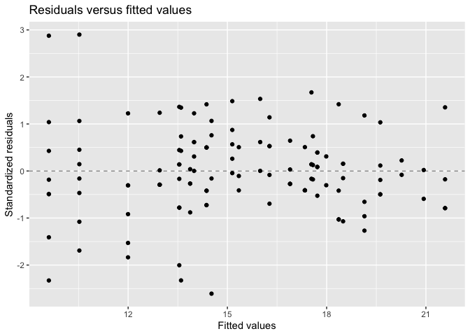

lmmix fits Gaussian linear mixed models by explicitly optimizing the ML or REML criterion. Its main use case is a model that contains both random effects and a structured residual covariance.
The package estimates the covariance parameters, fixed effects and empirical BLUPs in one fitted object. It also provides Satterthwaite and Kenward-Roger inference, type III tests, likelihood-ratio comparisons, estimated marginal means, pairwise contrasts, standard model methods, broom methods and emmeans interoperability.
The package is under active development. The table below summarizes the implemented functionality and the intended model boundary.
Installation
Install the development version directly from the public GitHub repository:
install.packages("devtools")
devtools::install_github("AurelienNicosiaULaval/lmmix")Vignettes
The package contains five complementary vignettes:
- Using lmmix (source) presents the fitting workflow and the main methods;
- Estimation and inference in lmmix (source) gives the mathematical formulation, covariance parameterizations, ML and REML criteria, and Satterthwaite and Kenward-Roger inference;
- Covariance intervals and boundary-aware model comparisons (source) explains bound-respecting covariance intervals and parametric-bootstrap likelihood-ratio tests;
- Validation against independent R implementations and PROC MIXED (source) documents the independent comparisons, numerical tolerances, and validation boundaries;
-
Choosing lmmix and related R packages (source) compares the implemented model and inference scope with
lme4,lmerTest,nlme, andmmrm.
They are also available from an installed package:
Current capability matrix
| Component | Current behavior |
|---|---|
| Response | Univariate continuous Gaussian response |
| Estimation | Explicit profiled ML and REML optimization |
| Random effects | No random effect, one grouping formula, or independent crossed or nested formulas with correlated slopes within each term |
| Residual covariance |
id, cs, ar1, full toep, banded toep(k), and un
|
| Combined covariance | Random effects and any supported residual structure in the same model |
| Denominator degrees of freedom | Satterthwaite, Kenward-Roger, or residual |
| Fixed-effect tests | Coefficient tests, type III tests, and nested-model likelihood-ratio comparisons |
| Covariance inference | Bound-respecting Wald intervals and parametric-bootstrap likelihood-ratio tests |
| Marginal means | Equal-weight estimated marginal means and automatic pairwise contrasts |
| Multiplicity | Any stats::p.adjust() method and simultaneous Bonferroni confidence intervals |
| Missing data |
na.omit, na.exclude, or na.fail
|
| Interoperability |
emmeans, tidy(), glance(), and augment()
|
| Diagnostic plots |
plot.lmm() returns ggplot2 residual, Q-Q, and fitted-value diagnostics |
| Standard extensions | Known precision weights, offsets, custom contrasts, simulation, updating, and prediction intervals |
| Model boundary | Gaussian responses; blockwise likelihood when independent components exist, with dense fitted covariance and inference matrices |
The development roadmap centralizes the version history, current limitations, validation boundaries, and planned development priorities.
Quick start: random center effect and AR(1) residuals
The included multicentre data are a three-center repeated-measures example with three treatments and three measurement occasions. The data contain 153 rows, including 28 missing responses. Their source is Milliken and Johnson (2009, Section 28.3).
library(lmmix)
fit <- lmm(
data = multicentre,
formula = Y ~ Drug * Time,
random = ~ 1 | Center,
repeated = ~ Time | Center:Drug:Subject,
structure = "ar1",
method = "REML",
ddf = "satterthwaite"
)
fit
#> Linear mixed model fit by REML
#> Formula: Y ~ Drug * Time
#> Random (Center): ~1 | Center
#> Repeated: ~Time | Center:Drug:Subject (AR1)
#> Log-likelihood: -245.313
#> Convergence code: 0By default, lmm() omits rows that are incomplete for variables required by the fixed, random and repeated formulas. The fitted object therefore records 125 observations for this example. Use na.action = na.exclude to restore omitted positions in fitted values, residuals and augmented data.
nobs(fit)
#> [1] 125
anova(fit)
#> Type III tests with satterthwaite degrees of freedom
#> # A tibble: 3 × 5
#> Term `Num DF` `Den DF` Statistic `p value`
#> <chr> <dbl> <dbl> <dbl> <dbl>
#> 1 Drug 2 46.4 11.4 9.23e- 5
#> 2 Time 2 68.5 59.3 1.16e-15
#> 3 Drug:Time 4 68.4 1.35 2.60e- 1
VarCorr(fit)
#> # A tibble: 3 × 5
#> Group Term Component Estimate `Std Error`
#> <chr> <chr> <chr> <dbl> <dbl>
#> 1 Center (Intercept) var 5.17 5.73
#> 2 Residual ar1 var 10.7 2.14
#> 3 Residual ar1 cor 0.935 0.0169Estimated marginal means and their pairwise differences are generated from the fixed-effects reference grid. No contrast rows need to be written by hand.
lsmeans(fit, ~Drug)
#> # A tibble: 3 × 8
#> Drug Estimate `Std Error` DF Statistic `p value` `Conf Low` `Conf High`
#> <fct> <dbl> <dbl> <dbl> <dbl> <dbl> <dbl> <dbl>
#> 1 1 13.2 1.53 2.98 8.60 0.00339 8.27 18.0
#> 2 2 18.1 1.53 3.01 11.8 0.00128 13.3 23.0
#> 3 3 17.1 1.53 3.01 11.1 0.00154 12.2 21.9
lsmeans(fit, pairwise ~ Drug, adjust = "holm")
#> Estimated marginal means
#> # A tibble: 3 × 8
#> Drug Estimate `Std Error` DF Statistic `p value` `Conf Low` `Conf High`
#> <fct> <dbl> <dbl> <dbl> <dbl> <dbl> <dbl> <dbl>
#> 1 1 13.2 1.53 2.98 8.60 0.00339 8.27 18.0
#> 2 2 18.1 1.53 3.01 11.8 0.00128 13.3 23.0
#> 3 3 17.1 1.53 3.01 11.1 0.00154 12.2 21.9
#> Pairwise contrasts
#> P-value adjustment: holm; confidence intervals: bonferroni
#> # A tibble: 3 × 8
#> Contrast Estimate `Std Error` DF Statistic `p value` `Conf Low` `Conf High`
#> <chr> <dbl> <dbl> <dbl> <dbl> <dbl> <dbl> <dbl>
#> 1 1 - 2 -4.99 1.10 46.1 -4.54 0.000120 -7.72 -2.26
#> 2 1 - 3 -3.89 1.10 46.1 -3.54 0.00183 -6.62 -1.16
#> 3 2 - 3 1.10 1.10 46.9 0.993 0.326 -1.64 3.84The convergence code and Hessian diagnostic should be checked before interpreting inference.
fit$convergence[c(
"code",
"optimizer",
"hessian_positive_definite"
)]
#> $code
#> [1] 0
#>
#> $optimizer
#> [1] "nlminb"
#>
#> $hessian_positive_definite
#> [1] TRUEThree supported model families
The same function covers three model families.
# Marginal repeated-measures model
marginal_fit <- lmm(
data,
response ~ treatment * time,
repeated = ~ time | subject,
structure = "un"
)
# Random-effects model with independent residuals
random_fit <- lmm(
data,
response ~ treatment + time,
random = ~ 1 + time | subject,
structure = "id"
)
# Crossed random intercepts
crossed_fit <- lmm(
data,
response ~ treatment + time,
random = list(
center = ~ 1 | center,
subject = ~ 1 | subject
)
)
# Combined random-effect and correlated-residual model
combined_fit <- lmm(
data,
response ~ treatment * time,
random = ~ 1 | center,
repeated = ~ time | center:subject,
structure = "ar1"
)For cs, ar1, toep, or un, repeated must identify one ordering variable and one grouping expression. Each repeated-measures group may contain at most one observation at a given ordering value.
Working with a fitted model
Standard methods return fixed effects, random effects, covariance components, predictions, residuals and information criteria.
fixef(fit)
#> (Intercept) Drug2 Drug3 Time2 Time3 Drug2:Time2
#> 12.0523806 4.7647059 3.9411765 0.9210922 2.3922323 -0.1427492
#> Drug3:Time2 Drug2:Time3 Drug3:Time3
#> -0.4735144 0.8233159 0.3342512
head(ranef(fit)[[1L]])
#> # A tibble: 3 × 2
#> Center `(Intercept)`
#> <chr> <dbl>
#> 1 R 0.901
#> 2 S 1.55
#> 3 T -2.45
head(residuals(fit))
#> 1 4 5 6 7 8
#> 4.0463233 -0.9536767 0.1252311 -0.3459090 -0.9536767 -2.8747689
head(predict(fit))
#> 1 4 5 6 7 8
#> 12.95368 12.95368 13.87477 15.34591 12.95368 13.87477The generics methods return tibbles suitable for downstream analysis. Printed tables use readable headings without dots, including Std Error, p value, Conf Low, and Conf High. The underlying objects retain the standard broom names required for programmatic use.
generics::tidy(fit)
#> # A tibble: 9 × 7
#> Effect Term Estimate `Std Error` Statistic DF `p value`
#> <chr> <chr> <dbl> <dbl> <dbl> <dbl> <dbl>
#> 1 fixed (Intercept) 12.1 1.54 7.83 3.06 0.00405
#> 2 fixed Drug2 4.76 1.12 4.25 49.8 0.0000928
#> 3 fixed Drug3 3.94 1.12 3.52 49.8 0.000939
#> 4 fixed Time2 0.921 0.294 3.13 67.5 0.00255
#> 5 fixed Time3 2.39 0.441 5.42 72.1 0.000000750
#> 6 fixed Drug2:Time2 -0.143 0.438 -0.326 67.9 0.746
#> 7 fixed Drug3:Time2 -0.474 0.448 -1.06 68.0 0.294
#> 8 fixed Drug2:Time3 0.823 0.666 1.24 72.7 0.221
#> 9 fixed Drug3:Time3 0.334 0.644 0.519 73.1 0.605
generics::glance(fit)
#> # A tibble: 1 × 8
#> `Log Lik` AIC BIC Deviance DF `N Obs` Convergence Method
#> <dbl> <dbl> <dbl> <dbl> <int> <int> <int> <chr>
#> 1 -245. 515. 549. 491. 12 125 0 REML
head(generics::augment(fit))
#> # A tibble: 6 × 8
#> Center Drug Subject Time Y Fitted Residual `Std Residual`
#> <fct> <fct> <fct> <fct> <dbl> <dbl> <dbl> <dbl>
#> 1 R 1 1 1 17 13.0 4.05 1.24
#> 2 R 1 2 1 12 13.0 -0.954 -0.292
#> 3 R 1 2 2 14 13.9 0.125 0.0383
#> 4 R 1 2 3 15 15.3 -0.346 -0.106
#> 5 R 1 3 1 12 13.0 -0.954 -0.292
#> 6 R 1 3 2 11 13.9 -2.87 -0.880The S3 plot() method returns a ggplot2 object and supports residual, normal Q-Q, and observed-versus-fitted diagnostics.
plot(fit, which = "residuals")
When emmeans is installed, the package supplies the fixed-effects basis and model-specific denominator degrees of freedom.
emmeans::emmeans(fit, ~Drug)
#> NOTE: Results may be misleading due to involvement in interactions
#> Drug emmean SE df lower.CL upper.CL
#> 1 13.2 1.53 2.98 8.27 18.0
#> 2 18.1 1.53 3.01 13.28 23.0
#> 3 17.1 1.53 3.01 12.18 21.9
#>
#> Results are averaged over the levels of: Time
#> Confidence level used: 0.95predict() can return standard errors, confidence intervals, or prediction intervals. simulate() draws marginal Gaussian responses from the fitted model, and update() refits a modified specification.
predict(fit, se.fit = TRUE, re.form = NA)
predict(fit, interval = "prediction", re.form = NA)
simulate(fit, nsim = 20, seed = 2026)
update(fit, . ~ . - Drug:Time)Prediction standard errors condition on any included empirical random effects. Prediction intervals add the fitted residual variance; they do not add BLUP estimation uncertainty.
Kenward-Roger inference is available for REML fits. Nested models with different fixed effects are automatically refitted with ML for a likelihood-ratio comparison.
Validation
The test suite separates numerical agreement from general software tests.
| Model component | External comparison | Quantities checked |
|---|---|---|
| Random intercept and random slope | nlme::lme() |
Fixed effects, covariance parameters, log-likelihood |
| Marginal CS and AR(1) | nlme::gls() |
Fixed effects, covariance parameters, log-likelihood |
| Marginal AR(1) | mmrm::mmrm() |
Fixed effects, residual covariance, log-likelihood |
| Satterthwaite inference | lmerTest::lmer() |
Coefficient degrees of freedom and type III tests |
| Kenward-Roger inference |
lmerTest and mmrm
|
Adjusted covariance and denominator degrees of freedom |
| Crossed random effects | lme4::lmer() |
Fixed effects, covariance parameters and log-likelihood |
| Nested-model comparisons | lme4::anova() |
Likelihood-ratio statistics and p-values |
| Official split-plot example 79.1 | Published PROC MIXED output | Variance components, REML criterion and type III tests |
| Official repeated-measures example 79.2 | Published PROC MIXED output | UN and CS covariance, ML criterion, fixed effects and type III statistics |
| Official random-coefficients example 79.5 | Published PROC MIXED output | Random covariance, REML criterion, fixed effects, BLUPs and type III test |
| Official line-source example 79.6 | Published PROC MIXED output | Three random variances, banded TOEP(4) covariance and REML criterion |
| Combined random center and AR(1) | Stored PROC MIXED targets | Covariance parameters, fixed effects, type III tests and marginal means |
The package also tests positive definiteness and convergence for every supported residual structure in a combined model. See VALIDATION.md and the validation vignette for model specifications, tolerances and limitations.
Model scope and remaining boundaries
The complete and maintained list is available in the development roadmap.
Version 0.4.0 fits univariate Gaussian models. It is not a generalized mixed-model engine. The likelihood detects independent connected components and factors their covariance blocks separately. The fitted object and some inference calculations still retain dense marginal matrices. Fully crossed designs may also form one large connected component, so the package does not yet make a large-scale sparse-computation claim.
Rows with missing responses or model covariates are handled according to na.action; the package does not impute missing covariates. Conditional prediction rejects unseen random-effect groups by default. Set allow.new.levels = TRUE to request the population-level prediction, for which the unseen random contribution is zero.
Theoretical sources
The REML implementation follows Patterson and Thompson (1971), Harville (1977), and LaMotte (2007). Satterthwaite inference follows Satterthwaite (1946), with multi-degree-of-freedom tests based on Fai and Cornelius (1996). Small-sample covariance adjustment follows Kenward and Roger (1997). Estimated marginal means follow Searle, Speed, and Milliken (1980). Full citations and DOI links are included in the package help and the theory vignette. The comparison vignette cites the primary software papers and official package documentation used to delimit overlapping scope.
Package citation
The installed package provides its current academic citation directly:
citation("lmmix")